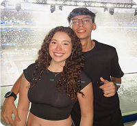

Arthur Moreira de Souza
Responsável pelo desenvolvimento dos sensores e da estrutura física da câmara de maturação, garantindo precisão milimétrica no controle de ambiente.
Somos estudantes dedicados a revolucionar o processo de maturação com precisão e tecnologia. Unimos tradição culinária à automação de ponta para o nosso Trabalho de Conclusão de Curso, criando uma solução laboratorial confiável para pequenos produtores e entusiastas da gastronomia.

Responsável pelo desenvolvimento dos sensores e da estrutura física da câmara de maturação, garantindo precisão milimétrica no controle de ambiente.
Focado no estudo bioquímico da maturação, definindo os parâmetros ideais de temperatura e umidade para garantir resultados de alta qualidade.
Responsável pelo design geral do projeto, desenvolvimento da interface do site e identidade visual do protótipo, garantindo consistência, usabilidade e uma experiência integrada do digital ao físico.
Criadora do painel de controle e algoritmos de automação, transformando dados brutos em interfaces intuitivas para monitoramento em tempo real.
Integração dos sistemas do equipamento com a nuvem, permitindo alertas remotos e análise de dados de longo prazo para otimização de processos.